传输层¶
传输层解决的是 “数据如何从一台机器的应用程序，可靠或高效地交给另一台机器的应用程序”。核心是两种协议：TCP（可靠） 和 UDP（不可靠）
常用命令¶
windows¶
-
查看所有TCP和UDP连接（包括监听和已建立）：netstat -an
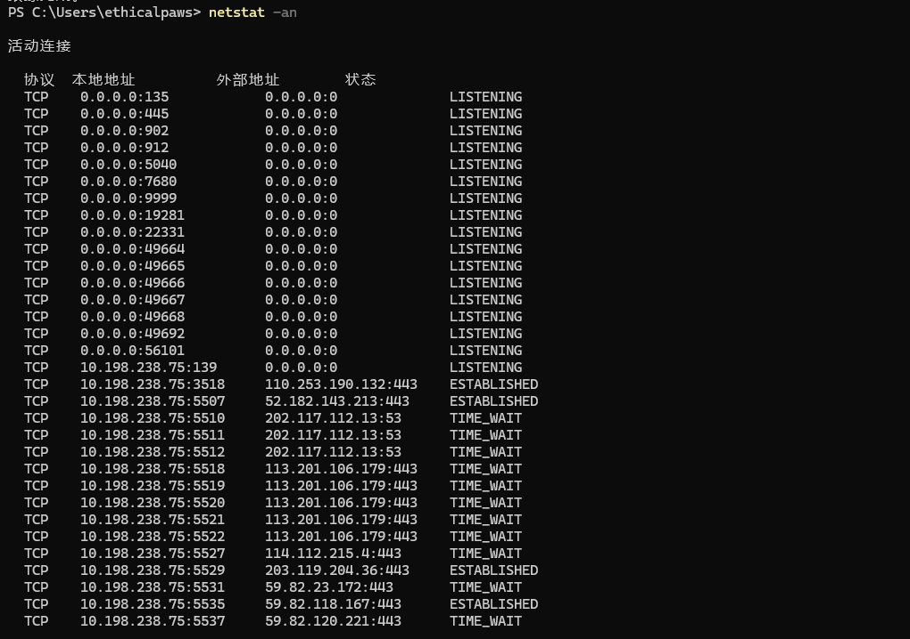
实战价值： -
快速判断哪些服务在运行（3389说明RDP开启，445说明SMB开启）
-
检测异常连接（如后门程序连接外网C2）
-
查看进程占用的端口，在 -an 基础上增加 -o 显示每个连接所属的进程ID（PID）：netstat -ano
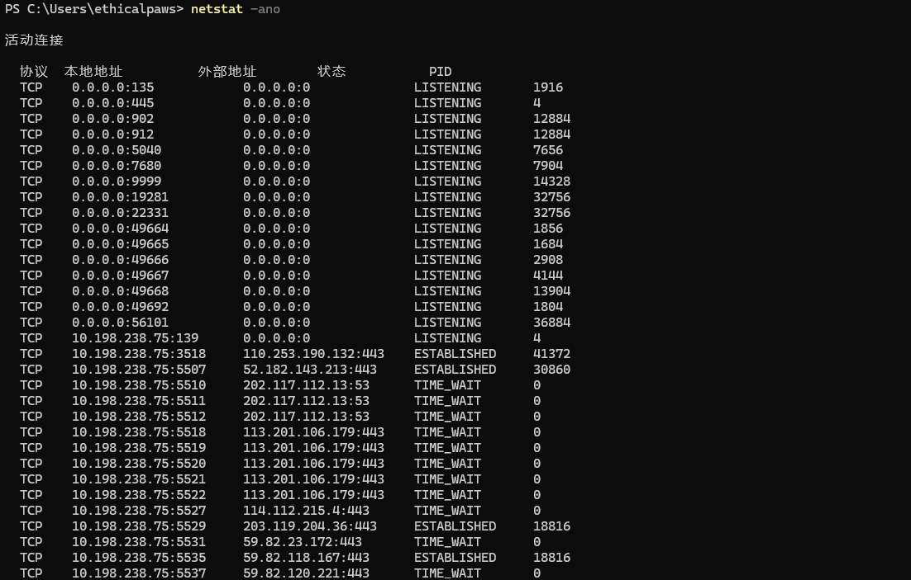
实战价值： -
找到异常端口后，用 tasklist | findstr PID 定位具体进程
-
例如：tasklist | findstr 1234 → svchost.exe，可以进一步判断是否是正常系统进程
-
查看端口归属进程：tasklist | findstr PID
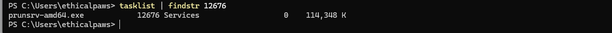
- 显示进程名称，需管理员权限：netstat -b【-b 需要管理员权限，且运行较慢。实战中通常先用 -ano 获取PID，再用 tasklist 查进程名】
- 测试TCP连接：telnet IP 端口 PowerShell原生命令：Test-NetConnection IP -port 端口
-
端口转发/代理：netsh interface portproxy
实战价值： -
跳板：拿到一台Windows主机后，用它做流量转发，访问内网其他机器的RDP/Web服务
-
隐藏C2：将流量转发到内网隐蔽端口
linux¶
- 查看所有连接/端口（加 -p 显示进程名和PID）
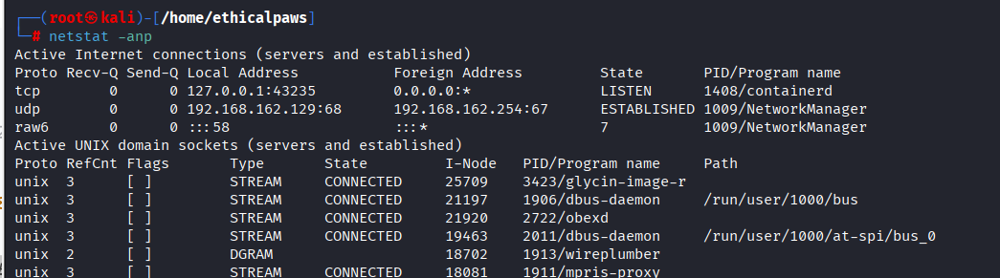
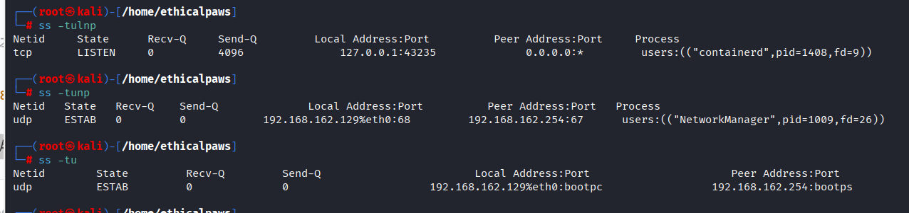
-
查看端口对应的进程
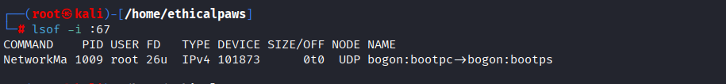
实战价值： -
快速确认某个端口（如 443）是哪个程序在监听
-
在渗透测试中，判断目标端口背后的服务类型（如Nginx、Apache、自定义后门）
- 测试TCP、UDP连接 -v 显示详细信息
-z 仅测试连通性，不发送数据
需要安装 netcat：sudo apt install netcat-traditional
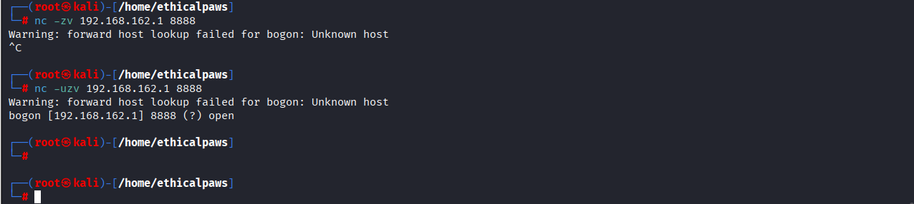
-
socat（端口转发/代理），比 netcat 更强大的网络工具，常用于渗透测试中的流量转发和隧道搭建。
实战价值： -
搭建跳板，将外网访问转为内网访问
-
反向Shell的流量转发
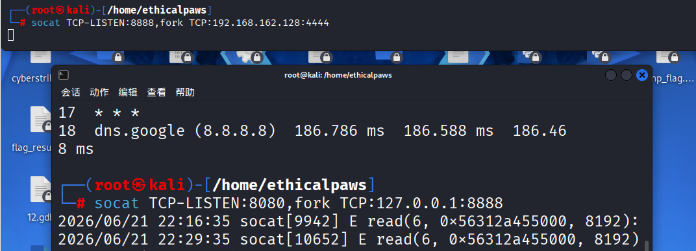
5. iptables（NAT/端口转发）,Linux内核防火墙，可用于端口转发# 将本机8888端口的TCP流量转发到目标ip端口
sudo iptables -t nat -A PREROUTING -p tcp --dport 8888 -j DNAT --to-destination 目标ip:端口号
# 启用IP转发（必须
sudo sysctl -w net.ipv4.ip_forward=1
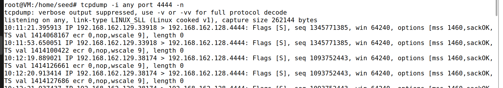
端口号¶
- 标识每台主机上的每个进程的“门牌号”，0-65535 常用端口号
- nmap扫描端口判断开放的服务
TCP¶
- 特点：面向连接，可靠，有序，流量控制，拥塞控制，差错控制，首部最少20字节
- 重要字段
- 三次握手
主机A（客户端） 主机B（服务器） | | | 1. SYN=1, SN=100, AN=0 | | ------------------------------------------> | | (请求建立连接) | | | | 2. SYN=1, ACK=1, SN=200, AN=101 | | <------------------------------------------ | | (同意建立连接，确认你的SN+1) | | | | 3. ACK=1, SN=101, AN=201 | | ------------------------------------------> | | (确认收到服务器的SYN) | | | | 连接建立，开始传输数据 | - 四次挥手
主机A 主机B | | | 1. FIN=1, ACK=1, SN=101, AN=201 | | ---------------------------------------> | | (A说：我数据发完了，要关了) | | | | 2. ACK=1, SN=201, AN=102 | | <--------------------------------------- | | (B说：我知道了，但我可能还有数据要发) | | | | (B可能继续发数据，此时A处于等待状态) | | | | 3. FIN=1, ACK=1, SN=201, AN=102 | | <--------------------------------------- | | (B说：我数据也发完了，可以关了) | | | | 4. ACK=1, SN=102, AN=202 | | ---------------------------------------> | | (A说：收到，那就关吧) | | | | 连接完全关闭 | - 常用的状态
UDP¶
- 特点：无连接，不可靠，无序，无流量控制，首部小仅8字节
- 应用场景
套接字¶
- 组成部分
- 套接字对（Socket Pair）—— 完整连接 一个完整的TCP连接由四个要素唯一确定：(源IP, 源端口, 目的IP, 目的端口)
- 类型
- 具体操作
实战关联¶
UDP 端口扫描的误报与验证¶
- 现象：使用 nc -uzv 目标IP 端口 扫描 UDP 服务，可能得到“端口开放”的提示，但实际该端口可能并未开放。
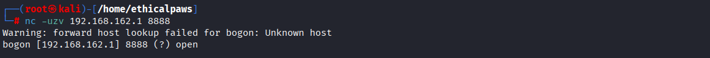
-
原因：nc 判断 UDP 端口是否开放的原理是“是否收到 ICMP 端口不可达”消息。如果目标网络丢弃了此类 ICMP 包，nc 就会将端口误判为“开放”（open）。
-
对策：
-
不要轻信单一 UDP 扫描结果。
-
交叉验证：使用多种工具进行验证，例如专业的 nmap UDP 扫描 (nmap -sU -p 8888 192.168.162.1)，或使用应用层协议专用探测工具。
-
理解原理：记住 ICMP 端口不可达是 UDP 端口是否开放的关键判断依据，但在防火墙/IDS 环境下经常被阻断。
内网流量转发demo（端口转发与隧道雏形）¶
-
攻击者（Windows）：尝试连接 Kali:8080。
-
跳板机（Kali）：socat 监听 8080 端口。收到连接后，它创建一个新的连接到 Ubuntu:4444
-
目标（Ubuntu）：nc 在 4444 端口监听。收到连接后，与 socat 建立通道。
-
双向转发：socat 在“攻击者-Kali”和“Kali-目标”这两个连接之间复制数据，实现流量的转发。fork 参数使得它能够处理多个并发连接。
-
关键价值：它实现了从一个可达主机（Kali）向另一个不可达主机（Ubuntu）的端口映射。这是内网穿透的基础，相当于一个简化版的 frp 或 EarthWorm 客户端。
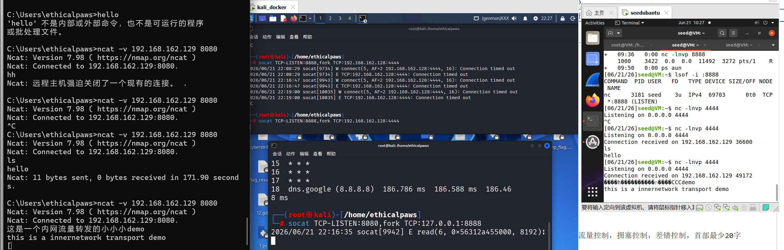